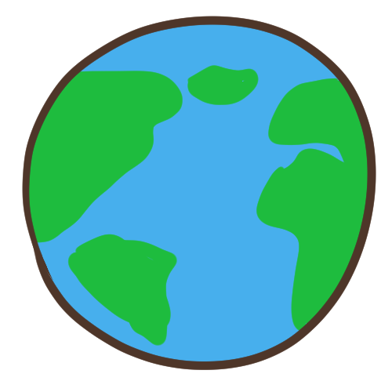

「氫氟碳化物」看似陌生，其實在每個人家中與辦公室的冰箱，冷調設備中都有這個化學品。顧名思義，氫氟碳化物是由氫、氟、碳這3種原子鍵結形成， 廣泛用於空調與冷凍裝置里，雖然不像上一代「氟氯碳化物」（CFCs）那樣破壞臭氧層（ozone layer），但是卻讓氣溫升高，導致全球暖化，其「全球暖化潛勢」（GWP） 可高達二氧化碳的1萬倍。這比二氧化碳還可怕的溫室氣體，就藏在你家的冰箱與冷氣中。 據估計，如果不禁止使用，僅氫氟碳化物就將在本世紀末造成0.5度的氣溫上升。
※資料擷自本次報導之訪談內容
雖說冷鏈技術的進步對於農產品的保鮮好處多多，但在整個流程都必須仰賴著「製冷劑」的支撐， 而製冷劑的使用則會產生許多氫氟碳化物（HFC）。根據研究統計， 可發現製冷劑所產生的HFC佔了該物質總排放量的86%；而冷藏冷鏈所產生的HFC竟佔據了整體製冷劑碳排的35％
那麼......
該如何平衡冷鏈外銷所增加的碳排問題，達成永續目的？

碳排放為目前全球所矚目的一大議題，政府可透過「鳳梨碳權」的計算，訂定相關碳排政策，彌補鳳梨外銷所造成的環境負擔。


鳳梨外銷產業的成功，不僅僅是一個商業行為的進步，若透過多方人士一同努力，亦可以在多個SDGs目標為我們生活的這塊大地盡一份心力，達到經濟與環境雙贏的局面！

希望看完了金鳳董我的經驗分享後，能夠讓大家更加了解鳳梨外銷產業的相關知識，也希望大家能夠與我一起攜手， 在發展農產外銷經濟之餘，一同實踐永續發展的精神，為環境保護盡一份心力！